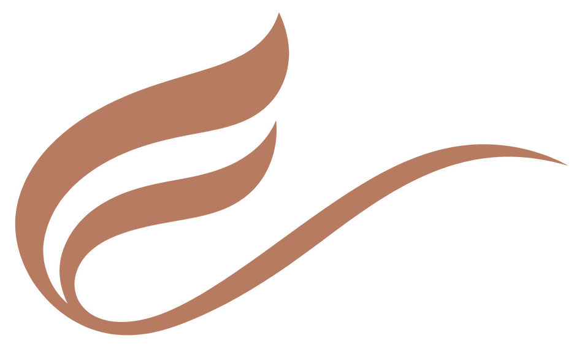

Design system v1 · for approval
Components, states & tokens
Colour
Brand palette from the identity board. Black and ivory lead; copper is for hairlines, numerals and text on black; stone carries secondary sections.
Soft Black#171717 · primary dark
Warm Ivory#F4EFE7 · reading surface
Muted Copper#B77B61 · accent
Warm Stone#D8CFC3 · secondary surface
Derived for accessibility (proposed)
Copper Deep#7A4733 · small copper text, 6.6:1 ivory / 4.9:1 stone
Muted#5A534B · secondary text, 6.6:1 ivory / 4.9:1 stone
Muted Dark#B9B1A6 · secondary text on black, 8.5:1
Ink Raised#222020 · panels on black
Error#9B2C1F · form errors, 6.6:1
| Pairing | Contrast | Use |
|---|---|---|
| Soft Black on Warm Ivory | 15.7 : 1 | All body text and headings |
| Warm Ivory on Soft Black | 15.7 : 1 | Text on dark sections |
| Muted Copper on Soft Black | 5.1 : 1 | Labels, numerals and accents on black |
| Muted Copper on Warm Ivory | 3.0 : 1 | Not for body or small text. Hairlines, marks and numerals 40 px and up only |
| Soft Black on Warm Stone | 11.6 : 1 | Text on stone sections |
Typography
Marcellus Regular for headings, Manrope Regular and Medium for text, buttons and navigation. Sizes are desktop / mobile.
Marcellus 80 / 42, lh 1.04
visual only, not a heading
Life after a setback can still be your own.
Marcellus 64 / 34, lh 1.06
About Nandita
Marcellus 46 / 29, lh 1.12
I have had to rebuild more than once.
Marcellus 28 / 22, lh 1.25
Believing in yourself again
Manrope 20 / 18, lh 1.6
I speak at women’s events, community gatherings and company sessions.
Manrope 17–18 / 16–17, lh 1.65–1.75
max 700 px measure
Confidence can drop after one hard event or fade slowly over years. I talk about how self-belief goes missing and what a first step back can look like.
Manrope 600, 12, tracking 0.16em
What I speak about
Manrope 500, 15 / 14
Invite Nandita to Speak
Grid & spacing
12 columns on desktop (24 px gutter), 4 visual columns on mobile. Content max width 1440 px.
| Token | Desktop ≥1024 | Tablet 768–1023 | Mobile 320–767 |
|---|---|---|---|
| Side padding | 72 px | 32 px | 20 px |
| Section spacing | 120 px | 96 px | 64 px |
| Column gutter | 24 px | 20 px | single column, 32 px row gap |
| Header height | 88 px | 88 px | 68 px |
| Reading measure | 700 px | ||
| Buttons | 52 px tall (44 px compact in header), 2 px radius | ||
| Touch targets | 44 × 44 px minimum | ||
| Motion | 180–400 ms ease, fades and 8–16 px moves, none under reduced motion | ||
Buttons & links
Square-cornered. The primary action is always worded “Invite Nandita to Speak” and links to Contact. A short copper stroke marks the main CTA.
Primary · default
Invite Nandita to SpeakPrimary · hover
Invite Nandita to SpeakPrimary · keyboard focus
Invite Nandita to SpeakSecondary
Load more postsSubmitting / disabled
Text link
Read my storyHeader
Sticky, black, ivory logo. The CTA stays visible at every width; below 1024 px the menu collapses behind a 44 px button. The menu closes on Escape and returns focus to the button.
Mobile · closed
Mobile · menu open
Form states
Labels sit above fields. Errors are written as fixes, keep what was typed, and move focus to the first problem. Success replaces the form on the page; no reply time is promised until confirmed.
Default
Focus
Error
Optional field
Textarea with limit
Sending
Button locks to stop duplicate submits.
Success
Thank you. Your enquiry has been sent.
A confirmation is on its way to your email.
Server error (enquiry not saved)
FAQ accordion
Each question is a button inside an H3 with aria-expanded and a linked panel. Answers are in the page HTML for search engines.
Answer
Answers sit in Manrope at a comfortable width, in muted text, with the plus turning to a minus.
Cards, photo slots & notes
Article card (image, category, title, date, two-line excerpt). Photo slots hold the crop and ratio until real photographs arrive; no stock or AI portraits. Dashed copper notes are design annotations and are not built.

Post title, up to two lines
Two-line excerpt, cut off with an ellipsis after the second line so cards stay the same height.
Design noteAnnotation style used across the frames for hidden, pending or proposed content.
CTA band
Closes every page. One line and the primary CTA.
Invite Nandita to speak
Planning an event for women, or a session for your team?